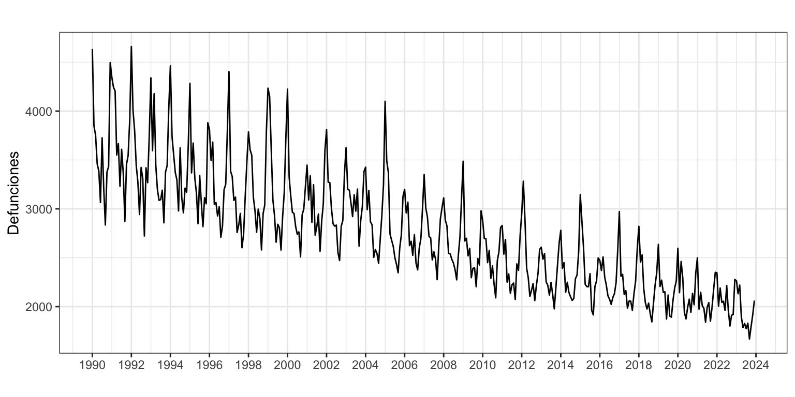
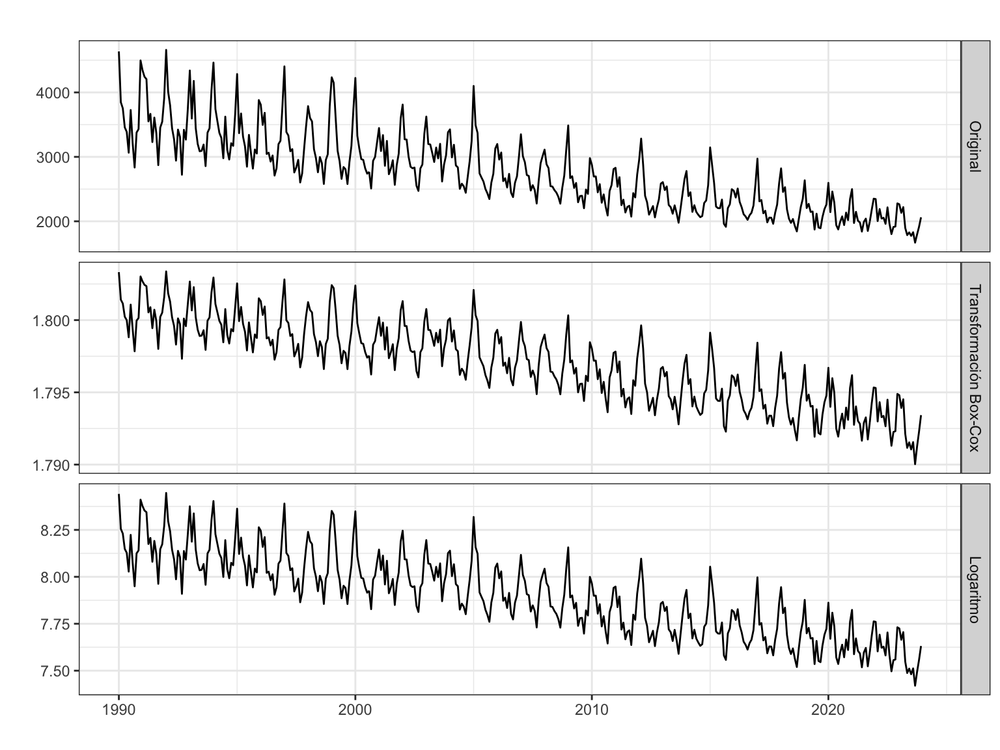
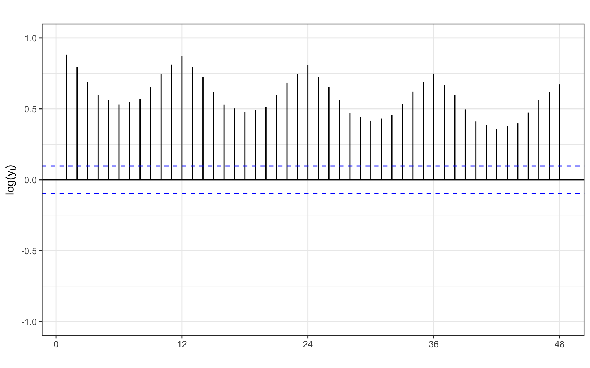
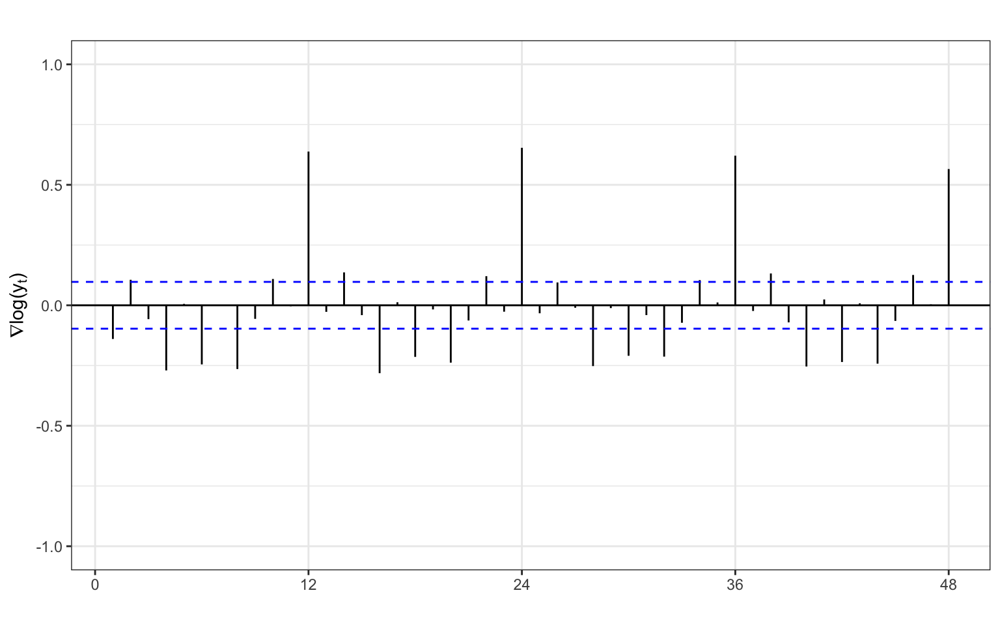
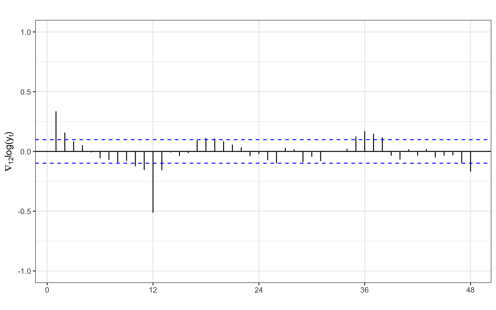
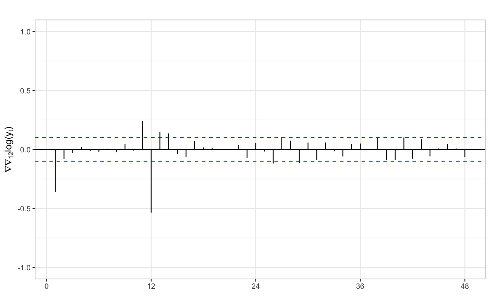
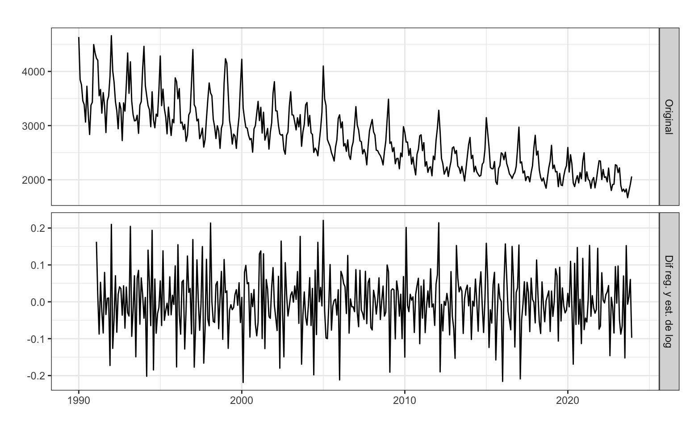
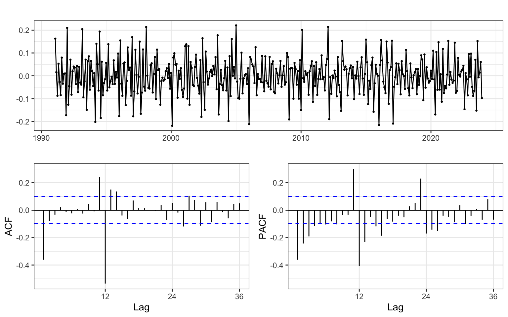

Defunciones por Enfermedades Cerebrovasculares
Procesos estocásticos
1 Introducción
Consideremos de nuevo la serie temporal correspondiente al número de defunciones causadas por enfermedades cerebrovasculares. Esta serie está disponible en el Instituto Nacional de Estadística desde enero de 1980 hasta diciembre de 2020, un total de 41 años o 492 meses
En la descriptiva vimos que la descomposición revelaba la presencia de varios valores atípicos concentrados al inicio de la serie. Por este motivo, vamos a recortar la serie y considerarla solo desde enero de 1988, 33 años o 396 meses.
La serie presenta tendencia decreciente y estacionalidad de orden 12 en un claro esquema multiplicativo (véase Figura 1).
DefEnfCer <- read.csv2("./series/Enfermedades cerebrovasculares.csv",
header = TRUE)
DefEnfCer <- ts(DefEnfCer[,2],
start = 1980,
frequency = 12)
DefEnfCer <- window(DefEnfCer,
start = 1988)
autoplot(DefEnfCer,
xlab = "",
ylab = "Defunciones",
main = "") +
scale_x_continuous(breaks= seq(1980, 2020, 2)) 
Veamos que transformaciones son necesarias para lograr que la serie sea estacionaria y ergódica.
2 Transformación logarítmica
El esquema multiplicativo aconseja el uso del logaritmo para el análisis de la serie. Veamos que transformación de Box-Cox nos sugiere R:
(nl <- BoxCox.lambda(DefEnfCer))[1] -0.3895519wDefEnfCer <-BoxCox(DefEnfCer, lambda = nl)El valor sugerido de \(\lambda=-0.39\) está alejado de 0 y es difícil de interpretar. Afortunadamente la Figura 2 muestra que la transformación logarítmica (panel inferior) genera una serie muy similar a la transformación de Box-Cox óptima (panel medio); y que ambas series transformadas tienen una varianza más constante que la serie original (panel superior).
series <- cbind("Original" = DefEnfCer,
"Transformación Box-Cox" = wDefEnfCer,
"Logaritmo" = log(DefEnfCer))
autoplot(series, facets = TRUE,
xlab = "",
ylab = "",
main = "")
Concluimos que se usará el logaritmo de las defunciones causadas por enfermedades cerebrovasculares en lugar de la serie original.
3 Diferenciaciones
Una vez decidida la transformación logarítmica, usaremos la FAC para determinar las diferenciaciones necesarias para alcanzar una serie estacionaria en media y ergódica.
ggAcf(log(DefEnfCer), lag = 48)
ggAcf(diff(log(DefEnfCer)), lag = 48)
ggAcf(diff(log(DefEnfCer), lag = 12),lag = 48)
ggAcf(diff(diff(log(DefEnfCer), lag=12)), lag = 48)



Los dos paneles superiores de la Figura 3 muestran que ni el logaritmo de la serie, ni su tasa de variación mensual \((\nabla \log(y_t))\) son ergódicas. Obsérvese que en ambos casos ni al cabo de 48 retardos los coeficientes de autocorrelación son nulos.
Claramente, la doble diferencia del logaritmo de la serie es estacionaria y ergódica porque el panel d muestra que sólo unos pocos coeficientes de autocorrelación son no nulos.
La tasa de variación anual \((\nabla_{12} \log(y_t))\) no ofrece resultados tan claros. El panel c muestra una rápida caída de los valores de la autocorrelación en la parte regular (primeros valores de retardo), pero siguen observándose valores no nulos para valores de retardo altos.
Por otro lado, las funciones ndiffsy nsdiffs avalan la doble diferenciación regular y estacional.
ndiffs(log(DefEnfCer))[1] 1nsdiffs(log(DefEnfCer))[1] 1Concluimos que para alcanzar la estacionariedad y verificar la hipótesis de ergodicidad es necesario diferenciar tanto en su parte regular como estacional el logaritmo de la serie. Es decir, la serie que verifica todas las hipótesis es \(\nabla \nabla_{12} log({y_t}_t)\).
Para finalizar, mostramos gráficamente la serie original y la serie transformada (Figura 4), así como la FAC y FACP de la serie transformada (Figura 5).
series <- cbind("Original" = DefEnfCer,
"Dif reg. y est. de log" = diff(diff(log(DefEnfCer), lag = 12)))
autoplot(series, facets = TRUE,
xlab = "",
ylab = "",
main = "")
ggtsdisplay(diff(diff(log(DefEnfCer)), lag = 12))
4 Contraste KPSS
Vamos a analizar la estacionariedad en media a partir del contraste de raíces unitarias. Como la serie original tiene estacionalidad, vamos a realizar la prueba KPSS a partir de la serie anualizada, ya mostrada en la descriptiva (véase Figura 6).
DefEnfCerAnual <- aggregate(DefEnfCer, FUN = sum)
autoplot(DefEnfCerAnual,
xlab = "",
ylab = "",
main = "") 
Procedemos con la prueba de KPSS con y sin tendencia determinista:
summary(ur.kpss(DefEnfCer, type='tau', lags = 'short'))
#######################
# KPSS Unit Root Test #
#######################
Test is of type: tau with 5 lags.
Value of test-statistic is: 0.0245
Critical value for a significance level of:
10pct 5pct 2.5pct 1pct
critical values 0.119 0.146 0.176 0.216Para un nivel de confianza del 5%, si asumimos la presencia de tendencia determinista (type = tau), entonces no hay tendencia estocástica –el estadístico de contraste 0.0245 es menor que el valor crítico 0.146.
summary(ur.kpss(DefEnfCer, type='mu', lags = 'short'))
#######################
# KPSS Unit Root Test #
#######################
Test is of type: mu with 5 lags.
Value of test-statistic is: 5.8141
Critical value for a significance level of:
10pct 5pct 2.5pct 1pct
critical values 0.347 0.463 0.574 0.739Si asumimos que no hay tendencia determinista, entonces hay tendencia estocástica –el estadístico de contraste 5.81 es mayor que el valor crítico 0.463.
En ambos casos concluimos que la serie no es estacionaria.
Si repetimos el contraste con la serie diferenciada, esta vez para un modelo sin tendencia determinista (type = mu) no se rechaza la hipótesis nula, la serie diferenciada no tiene raíces unitarias y puede considerarse estacionaria.
summary(ur.kpss(diff(DefEnfCer), type='mu', lags = 'short'))
#######################
# KPSS Unit Root Test #
#######################
Test is of type: mu with 5 lags.
Value of test-statistic is: 0.0124
Critical value for a significance level of:
10pct 5pct 2.5pct 1pct
critical values 0.347 0.463 0.574 0.739